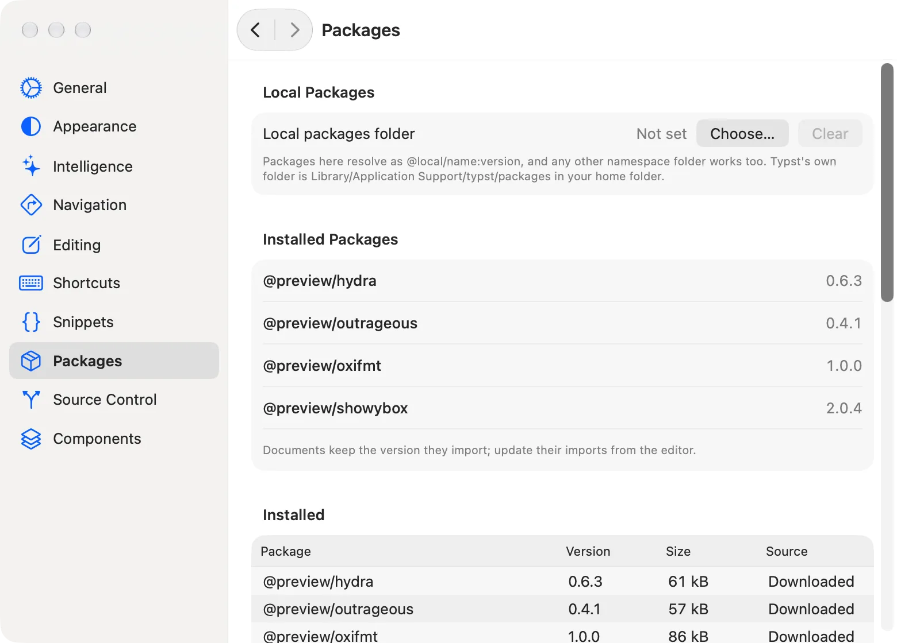
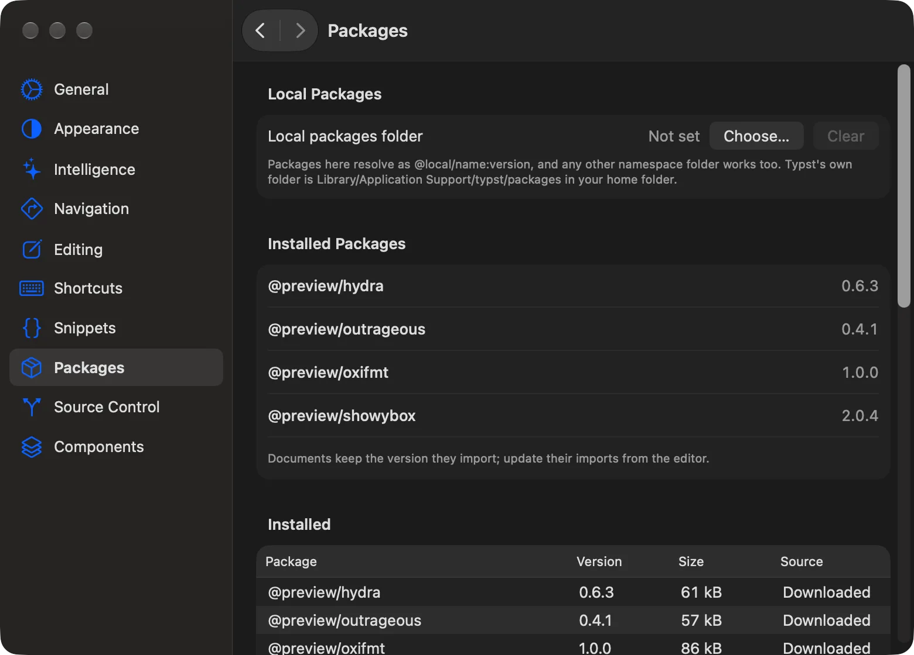
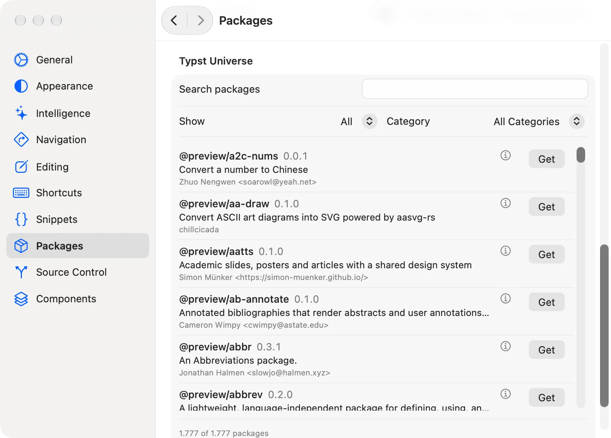
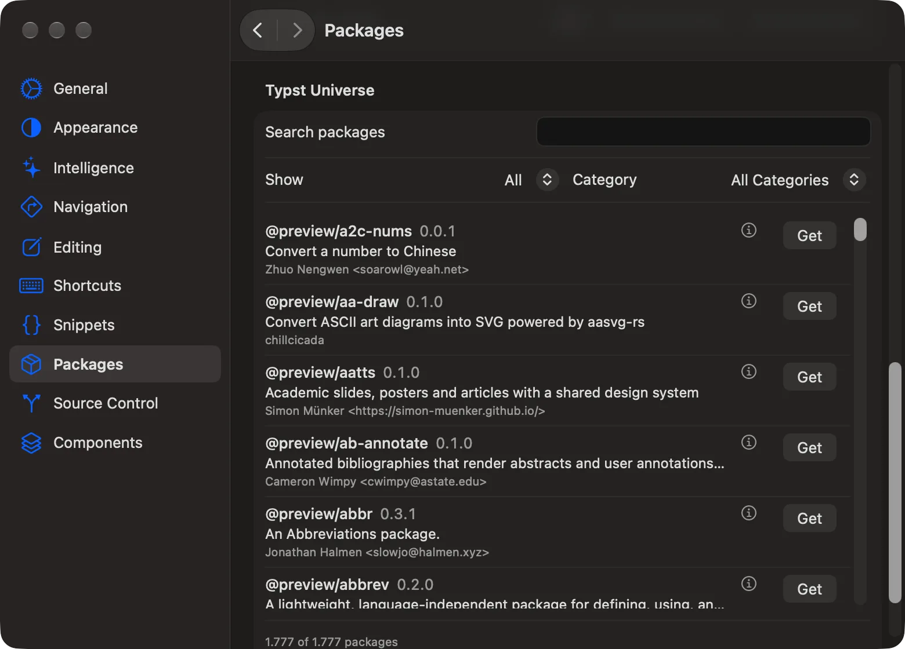

Packages
Typst packages come from Typst Universe or from your own folder. Typo has a browser for the first and a folder setting for the second.
Typst Universe
Open Settings › Packages to browse Typst Universe. Each package has a detail view. The Installed list shows the packages Typst has downloaded and your local packages, and how much space they use.
Packages are downloaded the first time a document imports them, so that needs a network connection. Typo keeps an index of the @preview packages with an offline cache. See Troubleshooting if a package does not load.




Local packages
The Local Packages section of Settings › Packages sets the folder for your own packages. Packages in it are available as @local or under custom namespaces.
Package updates
A document keeps the package version that it imports. To update an import, use the quick fix: put the caret on the import and choose Navigate › Show Quick Fixes (⌘.) when an update is offered.
Templates
Choose File › New Project from Template… to start a project from a Typst Universe template. The welcome window has a Templates… button for the same gallery.